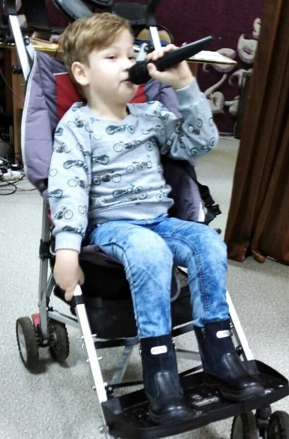
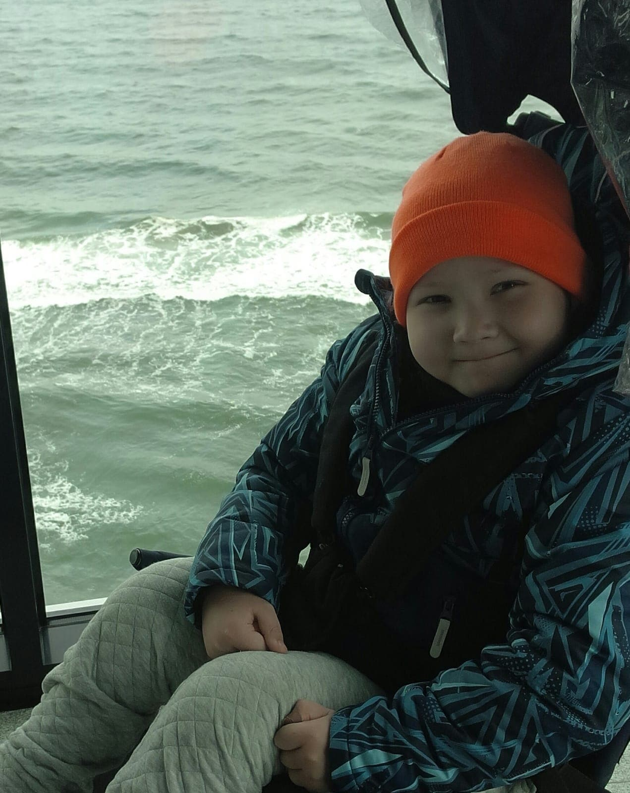

<!DOCTYPE html><html class="page" lang="ru"><head><meta charset="UTF-8"><meta http-equiv="X-UA-Compatible" content="IE=edge"><meta name="viewport" content="width=device-width, initial-scale=1.0"><title>Жизнь с диагнозом. Иван.</title><link rel="stylesheet" href="css/normalize.min.css"><link rel="stylesheet" href="css/style.min.css"><link rel="icon" href="img/favicon/favicon.svg" type="image/svg+xml">
<link rel="shortcut icon" href="img/favicon/favicon.ico" type="image/x-icon">
<link rel="icon" href="img/favicon/favicon-32x32.png" type="image/png">
<link rel="icon" href="img/favicon/favicon-16x16.png" type="image/png">
<link rel="icon" href="img/favicon/apple-touch-icon.png" type="image/png">
<link rel="icon" href="img/favicon/android-chrome-512x512.png" type="image/png">
<link rel="icon" href="img/favicon/android-chrome-192x192.png" type="image/png"></head></html><body class="life-stories-ivan-page" id="body"><header class="header" id="header"><div class="header-background"><div class="container header__container"><div class="header__grid"><a class="header__logo-link" href="index.html"></a><button class="header__menu-button header__navigation-link" id="header__menu-button" onclick="headerMenu()"><svg class="header__menu-button-icon menu-icon" height="20" viewBox="0 -53 384 384" xmlns="http://www.w3.org/2000/svg"><path d="M368 154.7H16a16 16 0 010-32h352a16 16 0 010 32zm0 0"/><path d="M368 32H16a16 16 0 010-32h352a16 16 0 010 32zm0 0"/><path d="M368 277.3H16a16 16 0 010-32h352a16 16 0 010 32zm0 0"/></svg>
<svg class="header__menu-button-icon close-icon" id="close-icon" height="20" viewBox="0 0 329.26933 329"><path d="m194.800781 164.769531 128.210938-128.214843c8.34375-8.339844 8.34375-21.824219 0-30.164063-8.339844-8.339844-21.824219-8.339844-30.164063 0l-128.214844 128.214844-128.210937-128.214844c-8.34375-8.339844-21.824219-8.339844-30.164063 0-8.34375 8.339844-8.34375 21.824219 0 30.164063l128.210938 128.214843-128.210938 128.214844c-8.34375 8.339844-8.34375 21.824219 0 30.164063 4.15625 4.160156 9.621094 6.25 15.082032 6.25 5.460937 0 10.921875-2.089844 15.082031-6.25l128.210937-128.214844 128.214844 128.214844c4.160156 4.160156 9.621094 6.25 15.082032 6.25 5.460937 0 10.921874-2.089844 15.082031-6.25 8.34375-8.339844 8.34375-21.824219 0-30.164063zm0 0"/></svg></button><div class="header__content" id="header__content"><div class="header__contacts"><ul class="header__contacts-list"><li class="header__contacts-item"><a class="header__contacts-link phone-link header__link" href="tel:+79102995050"><svg xmlns="http://www.w3.org/2000/svg" height="13" fill="white" viewBox="0 0 384 512"><path d="M304 0h-224c-35.35 0-64 28.65-64 64v384c0 35.35 28.65 64 64 64h224c35.35 0 64-28.65 64-64V64C368 28.65 339.3 0 304 0zM192 480c-17.75 0-32-14.25-32-32s14.25-32 32-32s32 14.25 32 32S209.8 480 192 480zM304 64v320h-224V64H304z"/></svg>+7 910 299 50 50</a></li><li class="header__contacts-item"><a class="header__contacts-link header__link" href="mailto:skazhiraku.net@mail.ru" target="_blank"><svg xmlns="http://www.w3.org/2000/svg" height="12" fill="white" viewBox="0 0 512 460"><path d="M464 64C490.5 64 512 85.49 512 112C512 127.1 504.9 141.3 492.8 150.4L275.2 313.6C263.8 322.1 248.2 322.1 236.8 313.6L19.2 150.4C7.113 141.3 0 127.1 0 112C0 85.49 21.49 64 48 64H464zM217.6 339.2C240.4 356.3 271.6 356.3 294.4 339.2L512 176V384C512 419.3 483.3 448 448 448H64C28.65 448 0 419.3 0 384V176L217.6 339.2z"/></svg>skazhiraku.net@mail.ru</a></li><li class="header__contacts-item"><a class="header__contacts-link header__link" href="https://vk.com/skazhirakunet" target="_blank"><svg height="9" fill="white" viewBox="0 0 17 10" xmlns="http://www.w3.org/2000/svg">
<path d="M16.5312 0.6875C16.625 0.3125 16.5312 0 15.9688 0H14.125C13.6562 0 13.4375 0.25 13.3125 0.53125C13.3125 0.53125 12.375 2.8125 11.0625 4.3125C10.625 4.71875 10.4375 4.875 10.1875 4.875C10.0938 4.875 9.90625 4.71875 9.90625 4.34375V0.6875C9.90625 0.21875 9.78125 0 9.375 0H6.5C6.1875 0 6.03125 0.21875 6.03125 0.4375C6.03125 0.875 6.6875 0.96875 6.75 2.21875V4.9375C6.75 5.53125 6.65625 5.65625 6.40625 5.65625C5.78125 5.65625 4.28125 3.34375 3.375 0.71875C3.1875 0.21875 3 0 2.53125 0H0.6875C0.1875 0 0.0625 0.25 0.0625 0.53125C0.0625 1.03125 0.6875 3.4375 2.96875 6.65625C4.5 8.84375 6.65625 10 8.59375 10C9.75 10 9.90625 9.75 9.90625 9.3125C9.90625 7.21875 9.8125 7 10.375 7C10.6562 7 11.125 7.15625 12.2188 8.21875C13.4688 9.46875 13.6875 10 14.375 10H16.2188C16.75 10 17 9.75 16.8438 9.21875C16.5 8.15625 14.1562 5.90625 14.0312 5.75C13.75 5.40625 13.8438 5.25 14.0312 4.9375C14.0312 4.9375 16.2812 1.75 16.5312 0.6875Z"/>
</svg>Сообщество Вконтакте</a></li></ul></div><nav class="header__navigation"><ul class="header__navigation-list"><li class="header__navigation-item"><a class="header__navigation-link header__link header__life-stories-link" id="life-stories-button" href="life-stories-page.html">Жизнь с диагнозом</a></li><li class="header__navigation-item"><a class="header__navigation-link header__link documents-page-link" id="documents-page-link" href="documets-page.html">Документы</a></li><li class="header__navigation-item"><a class="header__navigation-link header__link requisites-button" href="requisites-page.html">Реквизиты</a></li></ul></nav><div class="header__buttons-block"><a class="header__navigation-link need-help-button header__link" id="need-help-button" href="index.html#contact-us">Нужна помошь?</a></div></div></div></div></div></header><main><section class="life-stories-article"><div class="container"><h2>Мальчик Ваня 7 лет, с диагнозом Спина бифида.</h2><div class="life-stories-article__grid"><div class="life-stories-article-text-block"><p class="life-stories-article-text">Ваня - долгожданный, желанный ребенок.  О его диагнозе мама узнала на УЗИ на 7 месяце беременности. Врач поставил диагноз spina bifida. Прогнозы давались не утешительные: ребенок не будет сохранным  интеллектуально и физически.</p><p class="life-stories-article-text">Spina bifida – врожденный дефект, который характеризуется неполным закрытием позвоночника и оболочек вокруг спинного мозга. Формируется на ранних сроках беременности. У детей с этим пороком нарушена двигательная активность, они не контролируют кишечник и мочевой пузырь, развивается гидроцефалия – в головном мозге накапливается жидкость. По данным Благотворительного фонда «Спина бифида» каждый год в России рождается 1500–2000 детей с диагнозом spina bifida.</p><p class="life-stories-article-text">Роды были трудными, но Ваня все выдержал. Родился недоношенным с пороком развития головного и спинного мозга. Из родильного отделения маму с ребенком направили в Детскую областную больницу, в которой находились 2 месяца. После чего их выписали домой.</p><p class="life-stories-article-text">Так как при рождении в Областной больнице города Брянск Ване не была проведена операция в 6 месяцев он отправился на свою первую операцию в РДКБ г Москва, в дальнейшем там Ване в течении года было проведено 3 операции. На сегодняшний день Ванечка перенес уже 5 операций.</p><p class="life-stories-article-text">Постепенно мама привыкла к своему новому образу жизни - постоянные сборы, поездки на лечение, обследование, реабилитацию - и приняла диагноз сына. Хотя далось ей это очень нелегко.</p><p class="life-stories-article-text">До 3-х лет она с Ваней ездила на реабилитацию по Брянской области. Проводили занятия в реабилитационном центре  «Родимичи» г. Новозыбков, в Брянской Областной больнице, в Комплексном центре социального обслуживания населения города Клинцы. По мере знакомства с мамочками особенных детей, узнала о федеральных центрах, где можно проходить реабилитацию. И продолжили лечение и обследование в Московском реабилитационном центре «Детство» и Научном центре здоровья детей РАМН.</p><p class="life-stories-article-text">Сейчас Ване 7 лет. Все мамины силы по-прежнему брошены на борьбу за своего ребенка, его жизнь, здоровье, реабилитацию и социализацию. С 4 лет мама Ванечку воспитывает одна, в этом ей  помогает дедушка, который очень любит внука и проводит с ним  много времени.</p><p class="life-stories-article-text">Ваня передвигается на коляске активного типа или на прогулочной коляске с маминой помощью. Это очень обаятельный ребенок. Любит петь, лепить из пластилина, заниматься рукоделием, изучать английские слова, заниматься спортом. Ведет активный образ жизни. Вместе с мамой он часто путешествует, конечно, по реабилитационным центрам, но во время поездок  ребенок получает много эмоций и общения с детишками и взрослыми. Он любознательный и очень общительный.</p><p class="life-stories-article-text">С сентября он стал заниматься в музыкальной и художественной школах. Учителя преподают предметы на дому. Так же по возможности посещает бассейн. В следующем году их ждет обучение школьным программам. Им с мамой очень хотелось бы получать образование в классе с детьми, чтобы Ванечка имел социальное взаимодействие со сверстниками и тем самым как можно больше раскрыл свой потенциал. Пожелаем удачи Ванечке и его маме. Пусть их успехи станут вознаграждением за труд и упорство.</p><a class="button" href="life-stories-page.html">Читать другие истории</a></div><div class="life-stories-article-images-block"><picture>
<source srcset="img/photo/life-stories-section/ivan.avif" type="image/avif">
<source srcset="img/photo/life-stories-section/ivan.webp" type="image/webp">
<source srcset="img/photo/life-stories-section/ivan.jpg" type="image/jpg">

</picture>
<picture>
<source srcset="img/photo/life-stories-section/ivan-2.avif" type="image/avif">
<source srcset="img/photo/life-stories-section/ivan-2.webp" type="image/webp">
<source srcset="img/photo/life-stories-section/ivan-2.jpg" type="image/jpg">

</picture></div></div></div></section></main><footer class="footer" id="footer"><div class="container"><div class="footer__grid"><div class="footer__item footer__info"><div class="footer__logo"></div><div class="footer__info-block"><p class="identification-numbers">огрн 1213200002091<br>инн 3241017983<br>кпп 324101001</p><a class="footer__link" href="agreement.html">Пользовательское соглашение<br></a><a class="footer__link" href="politica.html">Политика конфеденциальности</a><p class="copyright">© 2021 Благотворительный фонд "Скажи раку — нет!"</p></div></div><div class="footer__item footer__site-map"><h3 class="footer__title">Карта сайта</h3><div class="footer__site-map-block"><ul class="footer__site-map-list"><li class="footer__site-map-item"><a class="footer__site-map-link footer__link" href="life-stories-page.html">Жизнь с диагнозом</a></li><li class="footer__site-map-item"><a class="footer__site-map-link footer__link" href="#">Документы</a></li><li class="footer__site-map-item"><a class="footer__site-map-link footer__link" href="#">Реквизиты</a></li><li class="footer__site-map-item"><a class="footer__site-map-link footer__link" href="https://vk.com/skazhirakunet" target="_blank">Сообщество Вконтакте</a></li></ul></div></div><div class="footer__item footer__contacts"><h3 class="footer__title">Контакты</h3><div class="footer__contacts-block"><p>243140, Брянская область, г. Клинцы, ул Новая, д. 19</p><a class="footer__link footer__contact-link" href="tel:+79102995050">+7 910 299 50 50</a><a class="footer__link footer__contact-link" href="mailto:skazhiraku.net@mail.ru" target="_blank">skazhiraku.net@mail.ru</a><p>Разработчик сайта: <a class="footer__link site-autor" href="#">Савенок Дмитрий</a></p></div></div></div></div></footer><div class="button-to-top" id="toTop"><svg height="16" viewBox="0 0 24 24"><path d="M12 7.77l10.42 10.42a.92.92 0 001.3-1.3L12.66 5.8a.92.92 0 00-1.3 0L.24 16.89a.92.92 0 001.31 1.3L12 7.76z"/></svg></div><script src="js/jQuery_v3.6.0.min.js"></script><script src="js/script.min.js"></script><script src="js/button-to-top.min.js"></script><script src="js/contacts-section.min.js"></script><script src="js/header.min.js"></script></body>